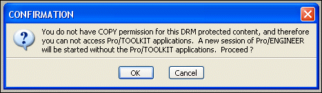

| • | pfcXToolkitNoPermission—Thrown if the method cannot proceed due to lack of needed permissions. |
| • | pfcXToolkitAuthenticationFailure—Thrown if the object cannot be opened because the policy server could not be contacted or if the user was unable to interactively login to the server. |
| • | pfcXToolkitUserAbort—Thrown if the object cannot be operated upon because the user cancelled the action at some point. |
|
Methods
|
Permission Required
|
Implications
|
|---|---|---|
|
pfcSession.BaseSession.Retrieve
AssemSimpRep pfcSession.BaseSession.Create
DrawingFromTemplate pfcSession.BaseSession.Retrieve
GraphicsSimpRep pfcSession.BaseSession.Retrieve
GeomSimpRep pfcSession.BaseSession.Retrieve
Model pfcSession.BaseSession.Retrieve
ModelWithOpts pfcSession.BaseSession.Retrieve
PartSimpRep pfcSession.BaseSession.Retrieve
SymbolicSimpRep |
OPEN
|
If file has OPEN and COPY permissions, model opens after authentication.
Throws the pfc
XToolkitNoPermission exception otherwise. |
|
pfcModel.Rename()
|
OPEN
|
File is saved with the current policy to disk if it has COPY permission.
|
|
pfcModel.Backup()
pfcModel.Copy()
|
SAVE
|
File is saved with the current policy to disk if it has SAVE and COPY permissions.
Throws the pfc
XToolkitNoPermission exception if model has COPY permission, but lacks SAVE permission. |
|
pfcModel.Save()
|
SAVE
|
File is saved with the current policy to disk if it has SAVE and COPY permissions.
Throws the pfc
XToolkitNoPermission exception if model has COPY permission, but lacks SAVE permission. Throws the pfc
XToolkitNoPermission exception if the assembly file has models with COPY permission, but lacking SAVE permission. |
|
pfcModel.Export() for pfcPlotInstructions
pfcModel.Model.Export for pfcProductViewExportInstructions (only if the input model is a drawing)
pfcSession.BaseSession.Export
CurrentRasterImage |
PRINT
|
Drawing file is printed if it has PRINT permission.
Throws the pfc
XToolkitNoPermission exception if drawing file lacks PRINT permission. |
| 1. | Creo Parametric checks for the authentication credentials through the user interface, if they are not already established. |
| 2. | If the user has permission to open the file, Creo Parametric checks if the permission level includes COPY. If the level includes COPY, Creo Parametric opens the file. |
| 3. | If COPY permission is not included, the following message is displayed: 
|
| 4. | If the user clicks Cancel, the file is not opened in the current Creo Parametric session and no new session is spawned. |
| 5. | If the user clicks OK, an additional session of Creo Parametric is spawned which does not permit any Web.Link application. Web.Link applications set to automatically start by Creo Parametric will not be started. Asynchronous applications will be unable to connect to this session. |
| 6. | The new session of Creo Parametric is automatically authenticated with the same session credentials as were used in the previous session. |
| 7. | The model that Creo Parametric was trying to load in the previous session is loaded in this session. |
| 8. | Other models already open in the previous session will not be loaded in the new session. |
| 9. | Session settings from the previous session will not be carried into the new session. |
| 10. | The new session will be granted the licenses currently used by the previous session. This means that the next time the user tries to do something in the previous session, Creo Parametric must obtain a new license from the license server. If the license is not available, the action will be blocked with an appropriate message. |
| • | The method pfcModel.CheckIsSaveAllowed() returns false if prevented from save by DRM restrictions. |
| • | The method pfcBaseSession.CopyFileToWS() is designed to fail and throw the pfcXToolkitNoPermission exception if passed a DRM-protected Creo Parametric model file. |
| • | The method pfcBaseSession.ImportToCurrentWS() reports a conflict in its output text file and does not copy a DRM-protected Creo Parametric model file to the Workspace. |
| • | While erasing an active Creo Parametric model with DRM restrictions, the methods pfcModel.Erase() and pfcModel.EraseWithDependencies() do not clear the data in the memory until the control returns to Creo Parametric from the Creo Parametric TOOLKIT application. Thus, the Creo Parametric session permissions may also not be cleared immediately after these methods return. |